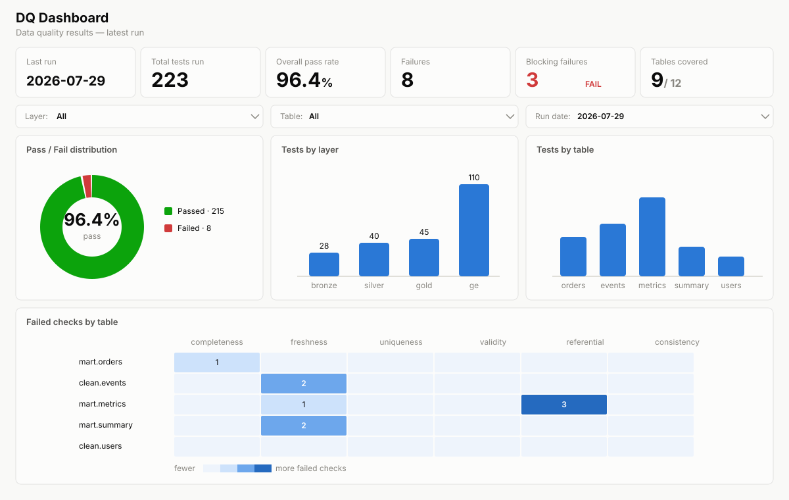
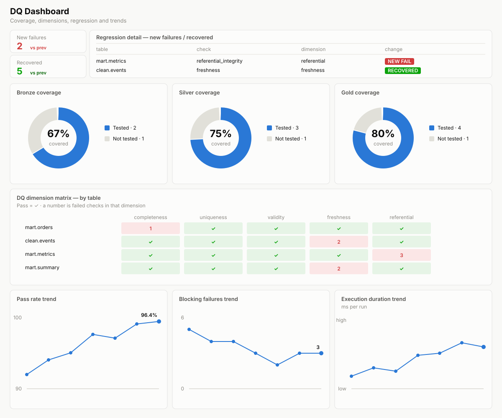

DQ Dashboard (Lakeview)
Generate a Databricks AI/BI (Lakeview) dashboard on top of the DQ results history table.
Overview
The framework persists every check result to a history table in Unity
Catalog. generate_dashboard() builds a ready-to-use Lakeview dashboard on top
of that table from a bundled, versioned template: no SQL or widgets are authored
by hand; the proven queries are reused verbatim and only the deployment-specific
values are filled in.
The dashboard is a single page with 8 datasets feeding widgets for:
| Area | Widgets |
|---|---|
| Status | Pass/Fail pie, tests by layer, tests by table, failed-checks heatmap |
| Coverage | Bronze / Silver / Gold coverage pies (expected vs tested) |
| Dimensions | DQ Dimension Matrix (completeness, uniqueness, validity, …) |
| Trends | Pass-rate, blocking-failures and duration trend lines |
| KPIs | Pass rate, blocking failures, tables covered, last run |
| Regression | New Failures / Recovered counters + a detail table |
| Filters | Layer, Table, Run Date (global) |

Top (Status) section: KPIs, filters, pass/fail split and a failed-checks heatmap.

Lower section: coverage per tier, the DQ dimension matrix, regression detail and the trend lines. Both images are illustrative mockups with sample data, not screenshots of a live workspace.
Scope of the whole dashboard = your expected_tables
Every widget is scoped to the exact (schema, table) pairs you declare in
expected_tables, not just the coverage pies. A table you do not list
is invisible across the entire dashboard. See
The expected_tables contract.
Prerequisites
- A DQ history table already populated by your runs (the target declared in
data_to_save). - A SQL warehouse id.
This is designed to run inside a Databricks notebook, where nothing extra is
needed: databricks-sdk is already installed in the runtime, and
WorkspaceClient() (created with no arguments) authenticates automatically from
the notebook context, so there are no credentials to set.
Running from outside Databricks
Only if you run this outside a notebook (local machine, CI) do you need to install the SDK and provide credentials via the standard environment variables:
Quick Start
from neco_dq.dashboards import generate_dashboard
result = generate_dashboard(
history_table="my_catalog.dq.dq_test_history",
catalog="my_catalog",
warehouse_id="<warehouse_id>",
parent_path="/Users/you@org",
layers={
"bronze": ["raw"],
"silver": ["clean"],
"gold": ["mart", "marts"],
},
expected_tables=[
("mart", "orders"),
("mart", "customers"),
("clean", "events"),
],
mode="create",
)
print("dashboard_id:", result["dashboard_id"])
Just run the cell in a Databricks notebook: authentication is automatic. (To run it from outside Databricks instead, see Prerequisites for the credentials setup.)
parent_path with a service principal
If you authenticate as a service principal it may not own a /Users/...
folder. Point parent_path at a workspace folder the principal can write to
(e.g. a shared folder). Dashboards created via the API are owned by the
calling principal; transfer ownership to a human via the UI if needed.
Parameters
generate_dashboard()
| Parameter | Type | Required | Default | Description |
|---|---|---|---|---|
history_table |
str |
Yes | (none) | Full 3-part name (catalog.schema.table) used in every dataset's FROM. |
parent_path |
str |
Yes | (none) | Workspace folder to create the dashboard in (create mode). |
layers |
dict[str, list[str] \| dict] |
Yes | (none) | Medallion tier → schema(s), optionally per-catalog. See layers. |
expected_tables |
list[tuple[str, str] \| tuple[str, str, str]] |
Yes | (none) | (schema, table) pairs (catalog resolved from layers) or (catalog, schema, table) triples, scoping the whole dashboard. See contract. |
catalog |
str \| None |
No | None |
Global catalog for list-form layers entries. Required only if at least one tier is a plain schema list. See layers. |
warehouse_id |
str \| None |
No | None |
SQL warehouse for the dashboard + query validation. If omitted, the first RUNNING warehouse is auto-discovered. See note. |
display_name |
str |
No | "DQ Dashboard" |
Dashboard title. |
dashboard_id |
str \| None |
No | None |
Existing dashboard to patch (required for mode="update"). |
mode |
str |
No | "create" |
"create" or "update". See modes. |
template |
str |
No | "reference" |
Which bundled template to hydrate. |
validate_queries |
bool |
No | True |
Run every dataset query on the warehouse before publishing. |
publish |
bool |
No | True |
Publish after create/patch so viewers see the change. |
hydrate_template() accepts the same inputs minus the I/O ones (parent_path,
dashboard_id, mode, validate_queries, publish) and returns the
create/patch payload as a pure function, useful for inspection and testing.
layers
Maps each medallion tier to the schema(s) that belong to it. The three tiers
bronze / silver / gold are the dashboard's fixed structure (one coverage
pie and a layer axis per tier), but which schemas (and which catalog) map
to each tier is entirely up to you.
Each tier is given in one of two forms:
layers = {
# list form: these schemas live in the global `catalog` argument
"bronze": ["raw"],
"silver": ["clean"],
# dict form: this tier lives in its own catalog
"gold": {"catalog": "mart_catalog", "schemas": ["mart", "marts"]},
}
- Same catalog, different schemas per tier: use the list form for every
tier and pass a single global
catalog. (This is the original behaviour; thecatalogargument is unchanged.) - Separate catalog per tier: use the dict form for the tiers that live
elsewhere.
catalogis then needed only if some tier still uses the list form.
Rules:
- At least one tier must be present; tiers are otherwise optional: a bronze-only dashboard is valid. Absent tiers simply render empty widgets (their coverage pie shows no data) rather than being removed.
- Each present tier must map to a non-empty schema list.
- No tier outside
bronze/silver/goldis allowed. - Catalog and schema names must not contain quotes (rejected as invalid input).
- A schema name may be declared under two different catalogs (e.g. a
rawschema in bothbronze_catandsilver_cat). The(catalog, schema)scope keeps them distinct. When this happens, reference those tables inexpected_tableswith the explicit(catalog, schema, table)triple — a plain(schema, table)pair would be ambiguous and is rejected. See the contract.
layers drives: the (catalog, schema) scope filter, the (catalog, schema)→layer
CASE maps (including Great-Expectations rows folded into tiers), and the
per-tier coverage pies.
Bronze-only, single catalog
Each tier in its own catalog
generate_dashboard(
history_table="meta.dq.dq_test_history",
parent_path="/Users/you@org",
layers={
"bronze": {"catalog": "bronze_cat", "schemas": ["raw"]},
"silver": {"catalog": "silver_cat", "schemas": ["clean"]},
"gold": {"catalog": "gold_cat", "schemas": ["mart"]},
},
expected_tables=[("raw", "ingestion"), ("clean", "events"), ("mart", "orders")],
# no global `catalog` needed: every tier carries its own
)
The expected_tables contract
expected_tables is the single source of truth for the entire dashboard, not
just the coverage widget.
- Each entry is either a
(schema, table)pair or a(catalog, schema, table)triple (the two forms may be mixed in one list). The list must be non-empty. For a pair, the schema's catalog is resolved automatically fromlayers, so you don't repeat it. For a triple you give the catalog explicitly. - A predicate
AND CONCAT(catalog, '.', schema, '.', table) IN (...)is injected into every dataset's base scan, so all widgets (status, KPIs, dimensions, trends, regression, coverage) report on exactly this set, correctly even when the sameschema.tablename exists in more than one catalog. - The coverage pies additionally treat this list as "should exist": a listed table that was never tested shows as not covered.
When to use the triple
Use (schema, table) for the common case — one catalog per schema, resolved
from layers. Use (catalog, schema, table) when the same schema name
lives in more than one catalog (e.g. a raw schema in both bronze_cat and
silver_cat): a bare pair can't tell which one you mean and is rejected as
ambiguous, so name the catalog explicitly.
Keep the list curated
A table you omit is completely absent from every widget, not merely excluded
from the coverage percentage. Treat expected_tables as your governed
catalogue of tables under DQ.
Schema names in expected_tables
Every entry must map to a (catalog, schema) you declared under layers —
that's how a table gets a tier for the coverage pies. A pair's schema must be
declared in layers; a triple's full (catalog, schema) must be too.
Modes
| Mode | Behaviour |
|---|---|
"create" (default) |
Creates a new dashboard under parent_path. Fails with AlreadyExists if one with the same display_name already exists in that folder. |
"update" |
Patches an existing dashboard. Requires dashboard_id. |
Re-running against the same dashboard
create is not idempotent: a second create with the same display_name
in the same folder fails with AlreadyExists. To update a dashboard you
already created, save the dashboard_id from the creation output and call
again with mode="update" and that id. There is intentionally no
lookup-by-name: the Lakeview list API is eventually consistent (a
just-created dashboard may not appear yet), so name-based matching can't be
relied on right after a create.
Updating an existing dashboard:
generate_dashboard(
# ... same coordinates ...
mode="update",
dashboard_id="01f...", # returned at creation time
)
Query validation
With validate_queries=True (default) every dataset query is executed on the
warehouse before publishing. If any query fails, the call raises
RuntimeError and nothing is published.
The sel_date parameter is bound automatically
Seven of the eight datasets reference the :sel_date Run Date parameter. The
validator binds sel_date = 'All' (the "unfiltered" sentinel) so a standalone
run doesn't fail with UNBOUND_SQL_PARAMETER.
To inspect the generated dashboard without any workspace writes, use the pure function directly:
from neco_dq.dashboards import hydrate_template
payload = hydrate_template(
history_table="my_catalog.dq.dq_test_history",
catalog="my_catalog",
warehouse_id="<warehouse_id>",
layers={"bronze": ["raw"], "silver": ["clean"], "gold": ["mart"]},
expected_tables=[("mart", "orders")],
)
print(payload["serialized_dashboard"]) # the fully-hydrated Lakeview JSON
Warehouse auto-discovery
warehouse_id is optional. If you omit it, the first RUNNING warehouse in
the workspace is used (or the first of any state if none is running):
generate_dashboard(
history_table="my_catalog.dq.dq_test_history",
catalog="my_catalog",
parent_path="/Users/you@org",
layers={"bronze": ["raw"], "silver": ["clean"], "gold": ["mart"]},
expected_tables=[("mart", "orders")],
# warehouse_id omitted → auto-discovered
)
Auto-discovery is not deterministic
It picks whatever RUNNING warehouse comes first. For reproducible runs
(CI, jobs), pass warehouse_id explicitly. If the workspace has no
warehouse, a RuntimeError is raised.
Confirmation output
On success the function prints a terminal confirmation with a direct link to the published dashboard:
DQ Dashboard generated successfully
Name: DQ Dashboard
ID: 01f2c9...
Action: Created + published
Open: https://<workspace>.cloud.databricks.com/dashboardsv3/01f2c9.../published
The Action line reflects whether the dashboard was created or updated, and
whether it was published (publish=True) or left as a draft.
Return value
generate_dashboard() returns a small, curated summary dict, not the raw
API response (which embeds the full serialized dashboard JSON, so printing it
whole dumps an unreadable wall of text):
| Key | Example | Notes |
|---|---|---|
dashboard_id |
"01f2c9..." |
The created/updated dashboard id. |
display_name |
"DQ Dashboard" |
Effective title. |
url |
https://<workspace>.../dashboardsv3/01f2c9.../published |
Published link, or None if the host is unknown. |
action |
"created" / "updated" |
Which operation ran. |
published |
True / False |
Whether it was published. |
History table requirements
Every dataset reads from the single history_table. It must expose at least:
| Column | Type | Used for |
|---|---|---|
run_timestamp |
timestamp | "latest run per table" (DENSE_RANK), trends, Run Date filter |
test_suite |
string | bronze / silver / gold / great_expectations |
catalog, schema, table, column |
string | Entity coordinates + expected_tables matching |
check_name |
string | Classified into DQ dimensions |
severity, blocking, passed, status |
(none) | Pass/fail, blocking-failure metrics |
Sparse JSON fields
The Execution Duration trend depends on execution:duration_ms, which is
sparsely populated; that widget may be mostly empty until the framework
consistently emits it.
Troubleshooting
| Symptom | What's happening / how to fix |
|---|---|
| Empty widgets | The table isn't in expected_tables, or its schema isn't mapped in layers. Add it to both. |
| Coverage shows tables as "not covered" | Those expected_tables entries have no test results yet, which is normal until they're tested. |
RuntimeError: dataset query failed [...] |
A query didn't validate. Double-check history_table, catalog, and that the schemas exist. |
AlreadyExists: A node with name '...' |
A dashboard with that display_name is already in parent_path. Re-run with mode="update" + its dashboard_id, or pick a different name (see Modes). |
Permission error / wrong parent_path |
Point parent_path at a folder your identity can write to. |
Entity etag ... does not match (update) |
Someone changed the dashboard since it was read. Just retry: the call always fetches a fresh version first. |
ImportError: databricks-sdk |
Run pip install databricks-sdk. |